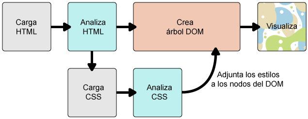
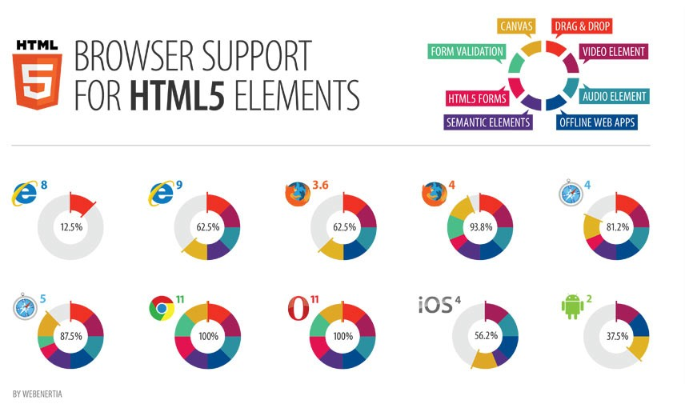
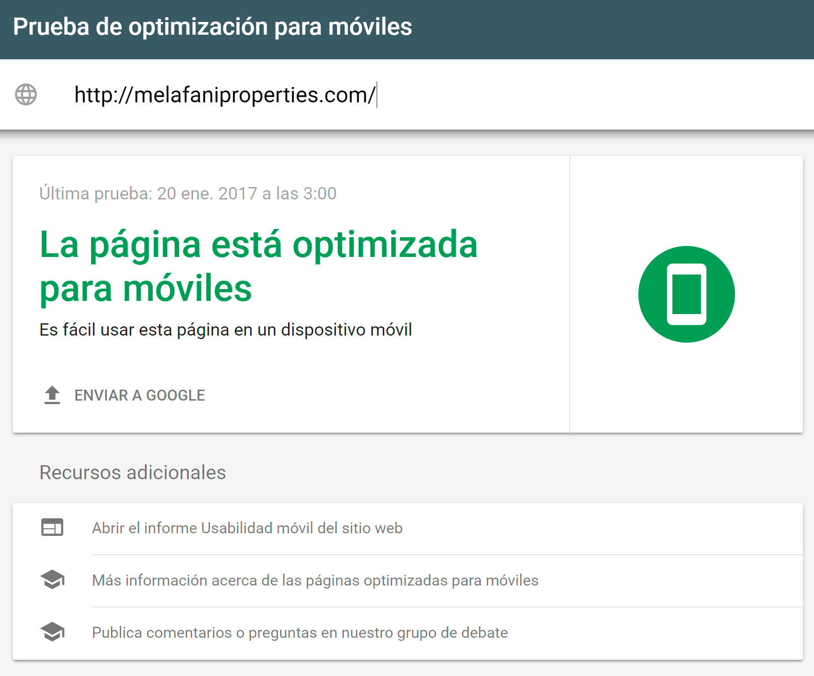

Patricia Juárez Muñoz
Licenciada en Ingeniería Informática en la Universidad de Granada (España).
Experta en el desarrollo de aplicaciones web y móviles.
Apasionada por el Front-end y la Experiencia de Usuario.
2007-2016 Freelance en empresas como 3DVista y Axesor.
2016-Actualidad Senior Software Engineer en Badger Maps.
Navegadores

Navegadores

Navegadores en el mercado
HTML


HyperText Markup Language
HTML
No es solo texto y enlaces
La web no tiene límites
No es solo texto y enlaces
La web no tiene límites
HTML
CSS
Cascading Style Sheets
CSS
CSS
| Selector | Example | Example description | CSS |
|---|---|---|---|
| .class | .intro | Selects all elements with class="intro" | 1 |
| #id | #firstname | Selects the element with id="firstname" | 1 |
| * | * | Selects all elements | 2 |
| element | p | Selects all <p> elements | 1 |
| element,element | div, p | Selects all <div> elements and all <p> elements | 1 |
| element element | div p | Selects all <p> elements inside <div> elements | 1 |
| element>element | div > p | Selects all <p> elements where the parent is a <div> element | 2 |
| element+element | div + p | Selects all <p> elements that are placed immediately after <div> elements | 2 |
| element1~element2 | p ~ ul | Selects every <ul> element that are preceded by a <p> element | 3 |
| [attribute] | [target] | Selects all elements with a target attribute | 2 |
| [attribute=value] | [target=_blank] | Selects all elements with target="_blank" | 2 |
| [attribute~=value] | [title~=flower] | Selects all elements with a title attribute containing the word "flower" | 2 |
| [attribute|=value] | [lang|=en] | Selects all elements with a lang attribute value starting with "en" | 2 |
| [attribute^=value] | a[href^="https"] | Selects every <a> element whose href attribute value begins with "https" | 3 |
| [attribute$=value] | a[href$=".pdf"] | Selects every <a> element whose href attribute value ends with ".pdf" | 3 |
| [attribute*=value] | a[href*="w3schools"] | Selects every <a> element whose href attribute value contains the substring "w3schools" | 3 |
| :active | a:active | Selects the active link | 1 |
| ::after | p::after | Insert something after the content of each <p> element | 2 |
| ::before | p::before | Insert something before the content of each <p> element | 2 |
| :checked | input:checked | Selects every checked <input> element | 3 |
| :disabled | input:disabled | Selects every disabled <input> element | 3 |
| :empty | p:empty | Selects every <p> element that has no children (including text nodes) | 3 |
| :enabled | input:enabled | Selects every enabled <input> element | 3 |
| :first-child | p:first-child | Selects every <p> element that is the first child of its parent | 2 |
| ::first-letter | p::first-letter | Selects the first letter of every <p> element | 1 |
| ::first-line | p::first-line | Selects the first line of every <p> element | 1 |
| :first-of-type | p:first-of-type | Selects every <p> element that is the first <p> element of its parent | 3 |
| :focus | input:focus | Selects the input element which has focus | 2 |
| :hover | a:hover | Selects links on mouse over | 1 |
| :in-range | input:in-range | Selects input elements with a value within a specified range | 3 |
| :invalid | input:invalid | Selects all input elements with an invalid value | 3 |
| :lang(language) | p:lang(it) | Selects every <p> element with a lang attribute equal to "it" (Italian) | 2 |
| :last-child | p:last-child | Selects every <p> element that is the last child of its parent | 3 |
| :last-of-type | p:last-of-type | Selects every <p> element that is the last <p> element of its parent | 3 |
| :link | a:link | Selects all unvisited links | 1 |
| :not(selector) | :not(p) | Selects every element that is not a <p> element | 3 |
| :nth-child(n) | p:nth-child(2) | Selects every <p> element that is the second child of its parent | 3 |
| :nth-last-child(n) | p:nth-last-child(2) | Selects every <p> element that is the second child of its parent, counting from the last child | 3 |
| :nth-last-of-type(n) | p:nth-last-of-type(2) | Selects every <p> element that is the second <p> element of its parent, counting from the last child | 3 |
| :nth-of-type(n) | p:nth-of-type(2) | Selects every <p> element that is the second <p> element of its parent | 3 |
| :only-of-type | p:only-of-type | Selects every <p> element that is the only <p> element of its parent | 3 |
| :only-child | p:only-child | Selects every <p> element that is the only child of its parent | 3 |
| :optional | input:optional | Selects input elements with no "required" attribute | 3 |
| :out-of-range | input:out-of-range | Selects input elements with a value outside a specified range | 3 |
| :read-only | input:read-only | Selects input elements with the "readonly" attribute specified | 3 |
| :read-write | input:read-write | Selects input elements with the "readonly" attribute NOT specified | 3 |
| :required | input:required | Selects input elements with the "required" attribute specified | 3 |
| :root | :root | Selects the document's root element | 3 |
| ::selection | ::selection | Selects the portion of an element that is selected by a user | |
| :target | #news:target | Selects the current active #news element (clicked on a URL containing that anchor name) | 3 |
| :valid | input:valid | Selects all input elements with a valid value | 3 |
| :visited | a:visited | Selects all visited links | 1 |
CSS
| Prioridad | Tipo de origen de CSS | Descripción |
|---|---|---|
| 1 | Importancia | La anotación ‘!important’ sobreescribe la prioridad anterior |
| 2 | Inline | Un estilo aplicado a un elemento HTML por medio del atributo 'style' |
| 3 | Media Type | Una propiedad aplica a todas las media types, a menos que un media type específico CSS esté definido |
| 4 | Definido por el usuario | La mayoría de los navegadores tienen esta característica de accesibilidad: un estilo CSS definido por el usuario |
| 5 | Especificidad del selector | Un selector contextual específico (#heading p) sobreescribe una definicón general (p) |
| 6 | Orden de las reglas | La última regla especificada tiene una mayor prioridad |
| 7 | Herencia | Si una propiedad no está especificada, es heredada del elemento padre |
| 8 | Definición de propiedad CSS en el documento HTML | Una regla CSS común sobreescribe el valor del navegador |
| 9 | Por defecto del navegador | La prioridad más baja: estos valores son determinados por las especificaciones iniciales de la W3C |
CSS
DOM
Document Object Model
DOM
Usado para visualizar las páginas web por el navegador
DOM
Novedades

HTML5, Javascript y CSS3
HTML5
HTML5
HTML5
Responsive Web Design
RWD
Responsive Web Design
Página flexible con min-width y unidades relativas (%)

Responsive Web Design
Página responsive con max-width y media-queries
Responsive Web Design
Responsive Web Design
¿Cómo se hace?
- Ajustar ancho de la página al ancho del dispositivo
<meta name="viewport" content="width=device-width, initial-scale=1.0"> - Añadir media queries para añadir estilos condicionales.
@media only screen and (max-width : 768px) {
Personas influyentes
Personas influyentes
Personas influyentes
Personas influyentes

Personas influyentes
Personas influyentes
Personas influyentes
Personas influyentes
Personas influyentes

Personas influyentes
David Flanagan
Mozilla
Tendencias 2017
Tendencias 2017
Lenguajes
Tendencias 2017
Frontend
Tendencias 2017
Backend
Tendencias 2017
Desarrollo Móvil